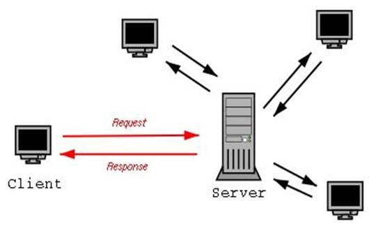

Теоретические сведения
Клиент-серверное взаимодействие
Клиент-серверная модель является основой работы веб-приложений. Она распределяет функционал между двумя участниками: клиентом (программа, запрашивающая услугу) и сервером (программа, предоставляющая услугу).
- Клиент – это программа, например, браузер, которая отправляет запросы на сервер.
- Сервер – программа, которая обрабатывает запросы и отправляет ответ (например, HTTP-сервер Apache, базы данных MySQL).
Они взаимодействуют по сети (например, Интернет) с использованием различных протоколов, таких как HTTP, FTP и IP-протоколы. Каждый протокол выполняет свою задачу, позволяя клиенту отправлять запросы, а серверу отвечать на них.
Пример:

При использовании протокола HTTP клиент (браузер) отправляет серверу запрос на получение веб-страницы. Этот запрос называется HTTP-запросом и включает метод (например, GET или POST). Сервер, получив запрос, возвращает HTTP-ответ с кодом состояния (например, 200 OK, 404 Not Found) и запрашиваемыми данными (например, HTML-страницей).
Основной принцип заключается в том, что клиент инициирует взаимодействие, а сервер только отвечает на запросы. Клиентское ПО и серверное ПО обычно работают на разных устройствах, но могут находиться и на одном компьютере.
Модель TCP/IP
Главной задачей стека TCP/IP является объединение в сеть разнородных пакетных подсетей через шлюзы. Каждая сеть может работать по своим правилам, однако шлюзы принимают пакеты из других сетей и передают их по указанным адресам. Пакеты передаются из одной подсети в другую через последовательность шлюзов, обеспечивающих сквозную маршрутизацию по всей сети. В данном контексте под шлюзом понимается точка соединения сетей, которая может быть как локальной, так и глобальной. В качестве шлюза могут выступать как специализированные устройства (например, маршрутизаторы), так и компьютеры с программным обеспечением для маршрутизации пакетов.
Маршрутизация — это процесс определения пути, по которому пакет будет передан из одной сети в другую. Такой механизм доставки возможен благодаря внедрению в узлы сети протокола IP (Internet Protocol). При передаче любое сообщение разделяется на фрагменты, и каждый из этих фрагментов снабжается адресами отправителя и получателя, а также номером в последовательности пакетов. Это позволяет маршрутизаторам на каждом этапе выбирать оптимальный путь для пакета в зависимости от текущего состояния сети, что повышает надежность передачи данных. Важным аспектом является то, что каждый пакет может пройти по своему собственному маршруту, и порядок их прибытия не имеет значения, так как в каждом пакете содержится информация о его положении в сообщении.

Пример передачи данных
На рисунке 2 представлен пользователь, который отправляет сообщение «Привет, Вася!». Когда пользователь вводит сообщение в почтовом клиенте и нажимает кнопку «Отправить», сообщение существует в виде пользовательских данных — это самый верхний уровень модели TCP/IP.
На транспортном уровне данные делятся на небольшие фрагменты, к каждому из которых добавляется заголовок, чтобы получатель смог собрать сообщение в исходном виде. Транспортный уровень создает надежный виртуальный канал поверх ненадежной сети.
Затем данные спускаются на сетевой уровень, где к ним добавляется сетевой заголовок, помогающий маршрутизаторам определить путь передачи данных. На этом уровне формируется логическая топология сети.
После этого данные передаются на канальный уровень, где к ним добавляются канальные заголовки, формируя кадры. Канальный уровень управляет физическим доступом к сети и проверяет целостность данных.
Когда кадры сформированы, они преобразуются в последовательность бит и передаются по линии связи — это физический уровень.
Пример передачи данных:
- IP-адрес отправителя: 82.146.49.55
- Порт отправителя: 2049
- IP-адрес получателя: 195.34.32.116
- Порт получателя: 53 (DNS-сервер)
Пакет отправляется с сокета 82.146.49.55:2049 на сокет 195.34.32.116:53. Сервер по адресу 195.34.32.116 (DNS) обработает запрос и отправит ответ обратно на сокет отправителя.
Инкапсуляция и декапсуляция данных
Процесс передачи данных делится на несколько этапов. При подготовке к отправке на каждом уровне добавляется заголовок, содержащий служебную информацию (адреса, порты и т.д.). Этот процесс называется инкапсуляцией. После получения данных заголовки удаляются на каждом уровне — это декапсуляция.
Заголовки содержат информацию о маршрутизации и корректности данных, что помогает сети доставить их по назначению и собрать в правильном порядке.
DNS и разрешение доменных имен
Людям сложно запоминать IP-адреса (например, 195.34.32.116), поэтому используется система доменных имен (DNS). DNS-сервера преобразуют доменные имена (например, www.example.com) в IP-адреса, что облегчает взаимодействие пользователей с интернет-ресурсами.
Пример:
Клиент отправляет запрос на сервер DNS (195.34.32.116:53) с вопросом: «Какой IP-адрес соответствует домену www.example.com?»
DNS-сервер отвечает: «82.146.49.55».
Затем клиент устанавливает соединение с веб-сервером по порту 80 и загружает страницу www.example.com.
Протокол HTTP
Протокол HTTP (HyperText Transfer Protocol) — это основа взаимодействия между веб-браузерами и веб-серверами. Когда пользователь вводит URL-адрес в строке браузера, кликает по ссылке или отправляет форму, браузер отправляет на сервер HTTP-запрос.
Основные элементы HTTP-запроса:
- Метод — определяет действие, которое нужно выполнить (например, GET, POST).
- GET — запрашивает ресурс (например, HTML-страницу или изображение).
- POST — отправляет данные на сервер (например, для отправки формы).
- URL — определяет путь к ресурсу.
- Заголовки — содержат метаинформацию о запросе (например, тип клиента, кодировки).
- Тело запроса (для методов POST и других) — содержит данные, которые передаются на сервер (например, содержимое формы).
HTTP-ответ:
После обработки HTTP-запроса сервер отправляет ответ, который содержит: 1. Код состояния — указывает на результат выполнения запроса (например, 200 OK, 404 Not Found). 2. Заголовки — метаинформация о содержимом ответа (например, тип данных, длина). 3. Тело ответа — содержит данные, запрашиваемые клиентом (например, HTML-код веб-страницы).
Пример HTTP-запроса и ответа:
- Запрос:
GET /index.html HTTP/1.1
Host: www.example.com
User-Agent: Mozilla/5.0
Accept: text/html
- Ответ:
HTTP/1.1 200 OK
Content-Type: text/html
Content-Length: 1234
<html>
<head><title>Exa ```
HTTP/1.1 200 OK
Content-Type: text/html
Content-Length: 1234
<html>
<head><title>Example</title></head>
<body>Пример страницы</body>
</html>
```mple</title></head>
<body>Пример страницы</body>
</html>
Методы HTTP:
- GET — запрашивает ресурс.
- POST — отправляет данные на сервер.
- PUT — обновляет существующий ресурс или создает новый.
- DELETE — удаляет указанный ресурс.
- HEAD — запрашивает только заголовки, без тела ответа.
HTTP-заголовки
HTTP-заголовки — это метаинформация, передаваемая между клиентом и сервером для управления передачей данных. Заголовки помогают определить параметры соединения, типы данных, методы сжатия и многое другое.
Основные виды заголовков:
- General Headers — общие заголовки, применяемые и к запросам, и к ответам:
- Connection: указывает, поддерживать ли соединение (
keep-aliveилиclose). -
Date: дата и время отправки сообщения.
-
Request Headers — заголовки, отправляемые клиентом:
- Host: доменное имя сервера (обязательно).
- User-Agent: информация о клиенте (браузере).
- Accept: типы данных, которые клиент может принимать (
text/html,application/json). -
Cookie: отправляет куки на сервер.
-
Response Headers — заголовки, отправляемые сервером:
- Content-Type: тип содержимого ответа (например,
text/html). - Content-Length: длина тела ответа в байтах.
- Set-Cookie: устанавливает куки для клиента.
Пример запроса:
GET /index.html HTTP/1.1
Host: www.example.com
User-Agent: Mozilla/5.0
Accept: text/html
Пример ответа:
HTTP/1.1 200 OK
Content-Type: text/html; charset=UTF-8
Content-Length: 348
Set-Cookie: sessionid=abc123; HttpOnly
Эти заголовки передают ключевую информацию для обработки запроса и ответа между клиентом и сервером.